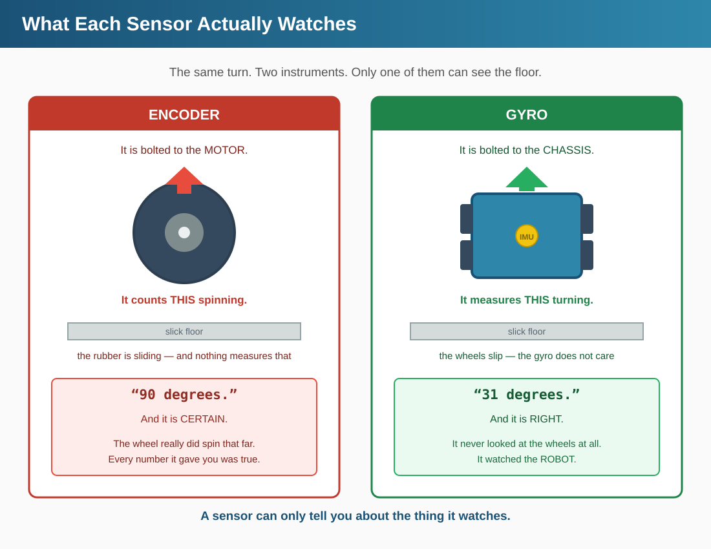
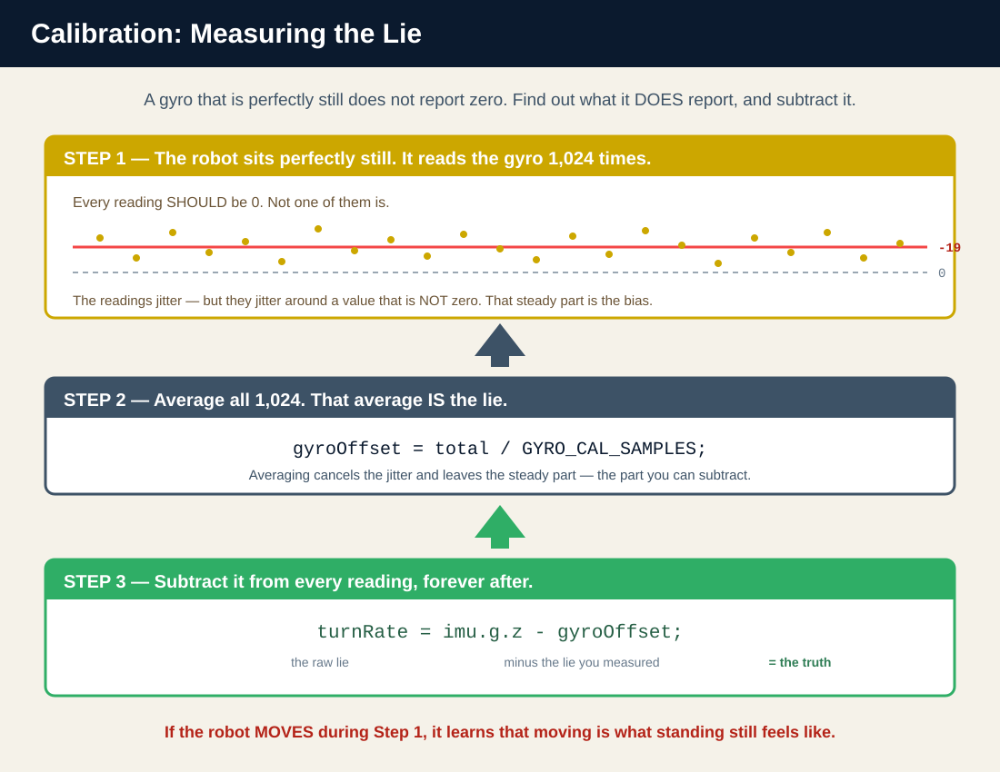
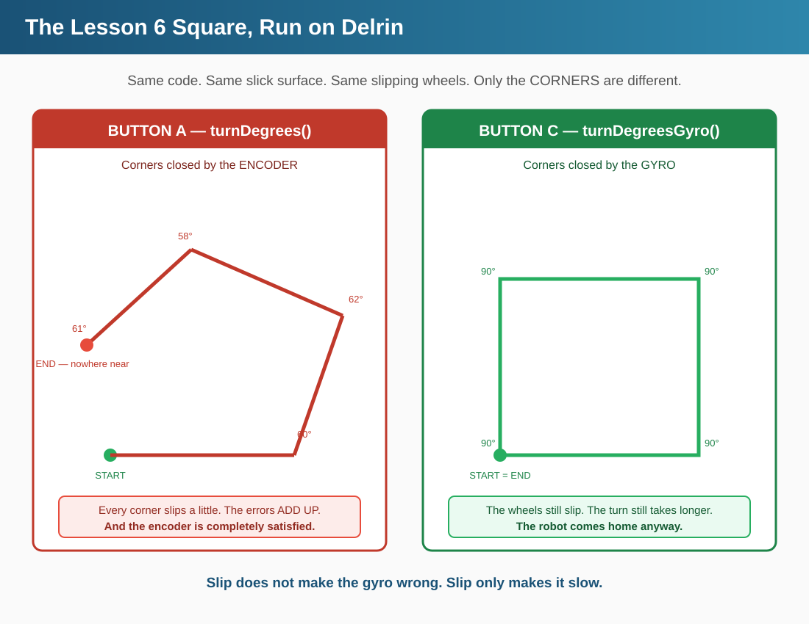

Put your Zumo on a smooth, slick surface. Tell it to turn 90 degrees.
Watch the wheels spin. Watch the encoders count. Watch the robot report,
with total confidence, that it has turned exactly 90 degrees.
Now look at the robot.
It is pointing almost exactly where it started.
The encoder is not broken. It is doing its job perfectly.
The encoder counts wheel rotation. The wheel did rotate. The encoder counted it correctly, reported it honestly, and stopped the turn at exactly the right count. Every number it produced was true.
The wheel just was not attached to the floor at the time.
This is the first sensor in this book that has lied to you. Not by malfunctioning —
by answering a different question than the one you asked.
You asked
The encoder answered
"Did the robot turn 90 degrees?"
"The wheels turned far enough that they would have spun the robot 90 degrees — if they had been gripping."
Those are the same answer on carpet. They are not the same answer on a slick floor,
on a patch of dust, on a wet spot, or when a wheel is jammed against a wall.
And here is the part that should bother you:
the encoder cannot tell the difference. It is structurally incapable of it.
The wheel is the very thing it is watching. Asking an encoder whether its wheel slipped is like
asking a witness to confirm their own alibi.
NOTE
What this lesson gives you
A sensor that watches the robot instead of the wheels — the gyroscope. It is the first instrument in this book that can catch another instrument in a lie.
Section 3 · TheoryWhy the Wheels Cannot Catch Themselves
3.1 A Sensor Can Only Report What It Watches
Every sensor you have used so far watches something outside the robot:
Sensor
What it watches
Lesson
Line sensors
The floor
4
Proximity sensor
Whatever is in front
5
Encoders
The robot's own wheels
6
Look at that last row again. The encoder is the only one that watches a part of the robot
instead of the world. That is the whole problem.
NOTE
The encoder measures INTENT, not RESULT.
It tells you how far the wheel turned. It does not — and cannot — tell you how far the robot moved. Those two things are connected by friction, and friction is not something the encoder can see.
When friction is good, the encoder's answer happens to also be the right answer. You have spent six lessons being quietly lucky.
3.2 Slip Is Invisible From Inside the Wheel
Here is the exact failure, step by step:
You command a 90° turn. The code computes: "at 5.5 counts per degree, that is 496 encoder counts."
The motors spin. The wheels spin. The encoders count up: 150… 350… 496.
The code sees 496, says "done", and stops the motors.
The robot has turned 31 degrees.
Now — which of those numbers was wrong?
None of them. The wheel really did spin 496 counts. The encoder really did count them.
The math really was correct. Every single component performed exactly as designed.
The rubber failed. And no encoder anywhere has a rubber sensor.

GRAPHIC 12.1 — The encoder is bolted to the motor. The gyro is bolted to the chassis. On a slick floor, only one of them is still answering the question you asked.
This is a structural limit, not a tuning problem.
You cannot fix this with a better constant. You cannot fix it with a smarter algorithm. You cannot fix it by counting more carefully.
The information is not present in the encoder signal at all. A slipping wheel and a gripping wheel produce the identical stream of counts. There is no clever way to tell them apart, because there is nothing to tell apart — the two cases are the same to the sensor.
To detect slip you need a second instrument, watching something else.
3.3 The Gyro Watches the Robot
A gyroscope measures rotation — how fast the thing it is bolted to
is spinning. It is bolted to the circuit board. The circuit board is bolted to the chassis.
So the gyro measures the robot. It has no idea the wheels exist.
Encoder
Gyro
Watches
The wheel
The chassis
Wheel slips
❌ Never notices
✅ Reports the truth
Robot lifted off floor
❌ Still "driving"
✅ Reports 0°
You turn it by hand
❌ Sees nothing
✅ Reports the angle
That last row is worth stopping on. You can pick the robot up, turn it with your hands,
and the gyro will tell you how far you turned it — with the motors switched off.
The encoders would report absolutely nothing. You will do exactly this in Section 7A.
3.4 A Gyro Does Not Report an Angle
Here is the catch, and it is the reason gyro code looks the way it does.
A gyro reports a RATE, not a position. It tells you
"right now I am spinning at 84 degrees per second". It does not tell you
"I am currently facing 37 degrees". It has no idea where it is facing. It never did.
To get an angle out of a rate, you have to add it up over time:
angle = rate x time
Spin at 90 deg/sec for 1.0 second -> 90 degrees
Spin at 90 deg/sec for 0.5 seconds -> 45 degrees
Spin at 45 deg/sec for 2.0 seconds -> 90 degrees
But the robot does not spin at one steady rate. It speeds up, it slows down, it catches on
a bump. So you cannot do the multiplication once. You have to do it over and over,
in tiny slices, and keep a running total:
every few milliseconds:
rate = how fast am I spinning RIGHT NOW?
dt = how long since I last checked?
total = total + (rate x dt) <-- accumulate
That running total is the angle. That accumulation is what gyroUpdate() does,
and it is why you must call it as often as you possibly can while turning.
NOTE
Every slice you miss is an angle you never counted.
If the robot spins for 40 ms and you were not looking, that rotation is gone. It is not recovered later — the gyro has no memory. It only ever tells you about now.
This is why gyroUpdate() lives inside the turn loop, called thousands of times per turn. Put a delay() in that loop and you are throwing away angle.
(Bonus mystery B2 deletes this call. The robot turns forever and never arrives. Now you know why.)
3.5 The Zero Is a Lie — and You Must Measure It
Set the Zumo on the table. Do not touch it. Do not breathe on it.
Ask the gyro how fast it is spinning.
It will not say zero.
It will say something like −7, or 19, or −23.
A gyro sitting perfectly still routinely reports up to 25 degrees per second of rotation
that is not happening. This is called bias, or drift, and it is not a defect.
Every gyro does it. Yours does it. A $40,000 aircraft gyro does it, just less.
Do the arithmetic on that.
A bias of 20°/sec, accumulated for one 3-second turn, adds 60 degrees of pure fiction to your angle.
Uncorrected, the gyro is worse than the encoder. Much worse.
So before you can trust the gyro, you must find out what its lie is —
and then subtract it, forever after.
That is what gyroSetup() does. It reads the gyro 1,024 times while the robot
sits absolutely still, averages all 1,024 readings, and stores the result as
gyroOffset. From that moment on, every reading gets that offset subtracted:

GRAPHIC 12.2 — Read it 1,024 times while it is still. Average them. That average is the lie — subtract it from every reading for the rest of the run.
void gyroUpdate() {
imu.readGyro();
int16_t turnRate = imu.g.z - gyroOffset;
uint16_t m = micros();
uint16_t dt = m - gyroLastUpdate;
gyroLastUpdate = m;
The subtraction on line 3 is the whole point: imu.g.z is the raw reading (which contains the lie), gyroOffset is the lie you measured at boot, and the difference is the truth.
NOTE
Why 1,024 samples and not just one?
Because the bias is noisy — it jitters around its true value. One reading might catch it at −23; the next at −11. Averaging 1,024 readings cancels the jitter and leaves the steady part, which is the part you can actually subtract.
It takes about a fifth of a second. That is why the OLED says HOLD STILL.
3.6 A Calibration Against Nothing At All
Stop and notice what just happened, because it is genuinely strange.
In Lesson 4 you calibrated the line sensors. You showed them white.
You showed them black. They learned the range between two things you could point at.
Now you are calibrating a sensor by showing it… nothing.
By holding the robot perfectly still and saying: "whatever you are reading right now —
that is what NOTHING looks like. Remember it. Subtract it from everything, forever."
This is the deepest idea in the lesson.
You are not calibrating the sensor against a reference. You are calibrating it against its own error.
The line sensors needed to learn what white was. The gyro needs to learn what its own dishonesty is — and then carry that number around and cancel itself out with it, on every single reading, for the rest of the run.
And therefore: A SPIN CANNOT CALIBRATE A GYRO.
If the robot moves during those 1,024 samples, the gyro will average in real rotation and conclude that spinning is what standing still feels like.
It will then subtract that from every future reading — and report that a robot which is genuinely spinning is perfectly still.
You will break it on purpose in Bonus B1.
NOTE
Sequence matters, and the code already gets it right.
Look at setup(): gyroSetup() runs beforewaitForStart(), which runs beforecalibrateLineSensors().
That order is not an accident. Line-sensor calibration spins the robot. If the gyro calibrated after it — or during it — the spin would poison the zero. The still measurement has to come first, while nothing has moved yet.
You do not have to plug anything in. You do not have to move a jumper.
The IMU — Inertial Measurement Unit — has been soldered to your Zumo's main board
since the day it was built, and it has been sitting there, unused, for eleven lessons.
An IMU is actually three sensors in one chip:
Part
Measures
Used here?
Gyroscope
Rotation rate (°/sec)
✅ Yes — the whole lesson
Accelerometer
Acceleration / tilt
Not in this lesson
Magnetometer
Magnetic field (a compass)
Not in this lesson
We only need the gyro, and we only need one axis of it: imu.g.z —
the z axis, which is the one pointing straight up out of the board. Rotation around a
vertical axis is exactly what "the robot turning" means.
The IMU is the only free sensor on this robot.
Every other sensor cost you something. The five-sensor line array cost you two proximity receivers — pins 20 and 4 are physically shared, so from Lesson 6 on you have run five line sensors and only the front proximity sensor.
The IMU costs zero pins. It sits on the I2C bus (SDA = D2, SCL = D3, fixed in the ATmega32U4 silicon), which nothing else on the Zumo is using. Turning the gyro on takes nothing away from you. That is not normal, and it is worth appreciating.
4.2 One Line You Must Not Forget
The I2C bus has to be switched on before anyone can talk over it. That is
Wire.begin(), and it happens once, at the top of gyroSetup().
Wire.begin() switches on the I2C bus. imu.init() finds the chip and identifies it. enableDefault() powers it up, and configureForTurnSensing() sets it up to measure turns. The calibration loop follows immediately after.
WARNING
Forget Wire.begin() and the robot hangs at startup.
No error message. No red build. The OLED just says Gyro calibrating / HOLD STILL and stays there forever, because imu.gyroDataReady() is waiting for data that will never come over a bus that was never switched on.
See Section 8 if this happens to you.
4.3 Two Different Chips, One Set of Code
Zumos built in different years carry different IMU chips. Yours might have an
LSM303D + L3GD20H pair, or a newer
LSM6DS33 + LIS3MDL pair.
You do not care, and you never will.
imu.init() asks the chip who it is — there is a register literally called
WHO_AM_I — and then configureForTurnSensing() quietly branches to the right
setup code for whichever chip answered.
NOTE
Why this matters in a classroom.
If you grab a spare Zumo from an older batch, your code runs on it unchanged. No edits, no #ifdefs, no "which board is this?" The library already asked, and already handled it.
4.4 The Angle Is Stored in a Strange Unit
Peek inside RobotSensors.cpp and you will find the running angle total stored like this:
static uint32_t turnAngle = 0;
That is not degrees. It is a fixed-point unit where
2^29 units = 45°. It exists because the ATmega32U4 has no floating-point hardware,
and doing this arithmetic in float thousands of times per turn would be far too slow.
You are never going to touch it. getTurnAngle() converts it to plain degrees,
and plain degrees is all you will ever see:
This is what a good function does: it takes something ugly and necessary, and puts a clean door on it. You ask getTurnAngle() for degrees; you get degrees. The fixed-point arithmetic is real, it is running, and it is none of your business.
(Curious what 2^29 is doing there? Section 8A.3 opens the door.)
Section 5 · Code WalkthroughFour Functions and Three Words
Everything in this lesson is four new functions in RobotSensors.cpp,
one new function in RobotMotion.cpp, and a three-word change
that quietly upgrades every turn in the book.
5.1 The Four Gyro Functions
These go in RobotSensors.cpp, because the gyro is a sensor.
They are declared in RobotSensors.h so the rest of the project can call them.
Function
When you call it
What it does
gyroSetup()
Once, in setup()
Wakes the chip and measures the lie (1,024 samples, robot still)
gyroReset()
At the start of every turn
Says "you are here" — sets the angle back to zero
gyroUpdate()
Constantly, inside the turn loop
Adds one time-slice of rotation to the running total
getTurnAngle()
Whenever you want to know
Hands back the running total, in plain degrees
NOTE
gyroReset() is not gyroSetup().
gyroSetup() measures the sensor's bias — it runs once, at boot, and it takes a fifth of a second.
gyroReset() just zeroes the counter — it is instant, and it runs at the start of every single turn. It means "measure from here."
Mix them up and you get Bonus B3: the first turn works and every turn after it finishes instantly.
5.2 The Honest Turn
This is the function the whole lesson has been walking toward.
Compare it, line for line, against Lesson 6's turnDegrees():
turnDegrees() — Lesson 6
turnDegreesGyro() — Lesson 12
Resets the encoders
Resets the gyro
Spins the wheels in opposite directions
Spins the wheels in opposite directions (identical)
Loops until the wheels have spun far enough
Loops until the robot has actually turned
Stops the motors
Stops the motors (identical)
Three of the four steps are the same. One line is different — the line that decides
when to stop — and that one line is the entire lesson.
// =====================================================
// THE HONEST TURN (NEW for Lesson 12)
// =====================================================
// turnDegrees() stops when the WHEELS have spun far enough.
// If a wheel slips, the wheel still spins - so the encoder still
// counts - so the robot still "finishes" a turn it never made.
// The encoder cannot catch this. The wheel IS what it is watching.
//
// The gyro watches the ROBOT. It does not care what the wheels do.
void turnDegreesGyro(float degrees) {
gyroReset(); // "we are at zero degrees, starting now"
int leftSpeed = (degrees > 0) ? TURN_SPEED : -TURN_SPEED;
int rightSpeed = -leftSpeed;
// Still NO TRIM. The wheels oppose on purpose, and the GYRO -
// not the wheels - decides when we are done.
motors.setSpeeds(leftSpeed, rightSpeed);
while (abs(getTurnAngle()) < abs(degrees)) {
gyroUpdate(); // add up the angle, slice by slice
}
motors.setSpeeds(0, 0);
}
Notice what is NOT in there: TRIM.
There is no TRIM in turnDegreesGyro(), and that is correct.
TRIM is for open loops. It corrects a robot that drifts when nothing is watching — driveDistance(), handleGap(). But this turn is being watched. The gyro checks the real angle thousands of times per second and stops the motors at exactly the right moment.
Adding TRIM here would mean fighting a controller that is already correct. It is not just unnecessary — it is wrong. Bonus B4 adds it anyway, and the result is genuinely nasty: the binary is exactly the same size.
5.3 The Three Words
Here is the payoff, and it is almost anticlimactic.
Since Lesson 9, every intersection turn in the book has gone through three little helpers.
They looked like this:
You did not touch the Lesson 9 state machine. You did not touch followLine(). You did not touch the intersection logic, or Lesson 10's obstacle code, or Lesson 11's gap crossing.
You changed three words inside three one-line functions — and every turn the robot makes, anywhere in the book, now closes on its real angle.
This is what Lesson 7 was for. If those turns had been written out longhand at each call site, this change would have been a fifty-line search-and-replace across four lessons, and you would have missed one.
NOTE
turnDegrees() is still there. On purpose.
We did not delete it. It is still correct, it still works, and on carpet it still agrees with the gyro to within a degree or two.
You are going to use it again in Section 7C — to break it, deliberately, in front of your own eyes. Deleting the old thing teaches nothing. Contradicting it teaches everything.
BRAIN CHECK 01 · MENTAL KNOWLEDGE CHECK — Answer From Your Head
That is the reading done. Before you let the gyro drive anything, answer these five from your head — no scrolling back, no robot, no help. Then click to compare. If your answer and the reveal disagree, the section number tells you where to re-read.
1. You have used three kinds of sensor so far. Name what each one watches — and say what makes the encoder the odd one out. (§3.1)
Line sensors watch the floor (Lesson 4), the proximity sensors watch whatever is in front of the robot (Lesson 5), and the encoders watch the robot’s own wheels (Lesson 6). The encoder is the only one that watches a part of the robot instead of the world, and that is the whole problem: it measures intent, not result. It tells you how far the wheel turned; it cannot tell you how far the robot moved. The two are connected by friction, and friction is not something the encoder can see. When friction is good the encoder’s answer happens to also be the right answer — which is what six lessons of being quietly lucky looks like.
2. A turn is commanded. The code works out 496 counts, the encoders count to 496, the motors stop — and the robot has turned 31 degrees. Which link in that chain was wrong? (§3.2)
None of them. The wheel really did spin 496 counts, the encoder really did count them, and the arithmetic really was correct. Every component performed exactly as designed. The rubber failed, and no encoder anywhere has a rubber sensor. This is why it is a structural limit rather than a tuning problem: a slipping wheel and a gripping wheel produce the identical stream of counts, so there is nothing in the encoder signal to tell apart. A better constant cannot fix it, a smarter algorithm cannot fix it, and counting more carefully cannot fix it. To detect slip you need a second instrument, watching something else.
3. The gyro is bolted to the circuit board, not to a motor. Name two things it reports correctly that the encoder gets wrong — and one it reports that the encoder cannot report at all. (§3.3)
When a wheel slips, the encoder never notices and the gyro reports the truth. When the robot is lifted off the floor, the encoder happily goes on “driving” and the gyro correctly reports 0°. And the one the encoder cannot answer at all: turn the robot by hand with the motors off. The gyro tells you how far you turned it; the encoders see nothing, because nothing they watch has moved. The gyro is bolted to the board, the board is bolted to the chassis, so the gyro measures the robot — it has no idea the wheels exist. You will do the hand-turn yourself in Section 7A.
4. A gyro does not report an angle. What does it report instead, and what does your code have to do thousands of times per turn to get an angle out of it? (§3.4)
It reports a rate — “right now I am spinning at 84 degrees per second” — not a position. It has no idea where it is facing and never did. To get an angle you have to accumulate: total = total + (rate × dt), over and over in tiny slices, because the robot does not spin at one steady rate. That accumulation is what gyroUpdate() does, and it is why the call lives inside the turn loop. Every slice you miss is an angle you never counted — the gyro has no memory and only ever tells you about now, so rotation you were not looking at is simply gone. Put a delay() in that loop and you are throwing away angle.
5. Set the Zumo on the table and do not touch it. Ask the gyro how fast it is spinning. It will not say zero. What is that number called, and what does gyroSetup() do about it? (§3.5)
It is called bias, or drift — a gyro sitting perfectly still routinely reports up to 25 degrees per second of rotation that is not happening. It is not a defect; every gyro does it, and a $40,000 aircraft gyro does it too, just less. Do the arithmetic and it is alarming: 20°/sec across a single three-second turn adds 60 degrees of pure fiction, which makes an uncorrected gyro far worse than the encoder. So gyroSetup() measures the lie: it reads the gyro 1,024 times while the robot sits absolutely still, averages the readings, and stores the result as gyroOffset. From then on every reading has that offset subtracted, which is why the OLED says HOLD STILL.
Section 6 · Build ItThe Honest Turn
NOTE
How this section works
Eight steps. Each one names the one file you open. After every step the project still compiles green — you can stop anywhere, build, and nothing is broken.
Steps 6 and 7 will feel like nothing happens. That is correct, and it is explained when you get there.
📁 Step 1: Copy Your Lesson 11 Projectno code
Open the Project Maker, choose Lesson 12, and download the starter project.
It is your finished Lesson 11 robot — line following, intersections, obstacles, gap crossing —
with nothing removed.
Build it before you change anything. Confirm it still drives the course.
You are about to modify a working robot, and you want to be certain it was working when you started.
📁 Step 2: Create the IMU ObjectRobotSensors.h + .cpp
The gyro is hardware, so it gets an object — exactly like motors,
encoders, and lineSensors before it.
First, in RobotSensors.h, announce that it exists.
Add this under the other extern lines:
extern Zumo32U4IMU imu; // NEW for Lesson 12
Then, in RobotSensors.cpp, actually create it.
Add this under the other object definitions:
Zumo32U4IMU imu; // NEW for Lesson 12
NOTE
extern in the .h, the real thing in the .cpp.
This is the same two-part pattern you have used since Lesson 7. The .h says "this object exists somewhere" so every file can talk about it. The .cpp is where it is actually made — exactly once, in exactly one file.
📁 Step 3: Add the Calibration ConstantRobotConfig.h
Open RobotConfig.h. Add this at the bottom:
// ===== GYRO (NEW for Lesson 12) =====
// How many readings to average when learning the gyro's "zero".
// The gyro reports rotation even when it is perfectly still - up to
// 25 degrees per second of pure fiction. We measure that lie once,
// at startup, and subtract it forever after.
const int GYRO_CAL_SAMPLES = 1024;
NOTE
Why a constant instead of just typing 1024?
Because RobotConfig.h is where every number a human might want to change lives. If your classroom is noisy and the gyro zero comes out unsteady, the fix is one number, in one place — not a hunt through RobotSensors.cpp.
NOTE
plain int, not uint16_t.
RobotConfig.h does not include <Arduino.h>, so the fixed-width types like uint16_t are not defined there. Plain int is what belongs in this file.
📁 Step 4: Declare the Four Gyro FunctionsRobotSensors.h
Back to RobotSensors.h. Add the four prototypes:
// ===== GYRO (NEW for Lesson 12) =====
// The encoders count WHEEL rotation. The gyro measures ROBOT rotation.
// When a wheel slips, only one of them is still telling the truth.
void gyroSetup();
void gyroReset();
void gyroUpdate();
int getTurnAngle();
NOTE
Nothing works yet, and the robot has not changed.
You have just promised that these four functions exist. You have not written them. The project still compiles — a prototype is a promise, and the compiler is willing to wait until link time to see it kept.
📁 Step 5: Write the Four Gyro FunctionsRobotSensors.cpp
This is the big one — the only step in the lesson with real substance to type.
Open RobotSensors.cpp and add this at the bottom.
Read the comments as you go. Every one of them is answering a question
you should be asking.
#include <Wire.h>
// =====================================================
// GYRO (NEW for Lesson 12)
// =====================================================
// The gyro's idea of "not moving". It is never exactly zero.
static int16_t gyroOffset = 0;
// How far we have turned since gyroReset(). This is stored in a
// fixed-point unit where 2^29 units = 45 degrees. You never have to
// touch it - getTurnAngle() converts it to plain degrees for you.
static uint32_t turnAngle = 0;
static uint16_t gyroLastUpdate = 0;
void gyroSetup() {
Wire.begin();
imu.init();
imu.enableDefault();
imu.configureForTurnSensing();
// Learn the gyro's "zero" - the robot MUST be still for this.
long total = 0;
for (int i = 0; i < GYRO_CAL_SAMPLES; i++) {
while (!imu.gyroDataReady()) { }
imu.readGyro();
total += imu.g.z;
}
gyroOffset = total / GYRO_CAL_SAMPLES;
}
// "You are here." Everything after this is measured from now.
void gyroReset() {
gyroLastUpdate = micros();
turnAngle = 0;
}
// Call this AS OFTEN AS POSSIBLE while turning. The gyro reports a
// RATE (degrees per second). To get an ANGLE you must add up the
// rate x time for every slice of time that passes. Miss slices,
// and you lose the angle that happened during them.
void gyroUpdate() {
imu.readGyro();
int16_t turnRate = imu.g.z - gyroOffset;
uint16_t m = micros();
uint16_t dt = m - gyroLastUpdate;
gyroLastUpdate = m;
// angle change = rotation rate x time
int32_t d = (int32_t)turnRate * dt;
turnAngle += (int64_t)d * 14680064 / 17578125;
}
// The gyro's answer, in plain degrees.
int getTurnAngle() {
return (((int32_t)turnAngle >> 16) * 360) >> 16;
}
About those two giant numbers: they convert the gyro’s raw readings into degrees using pure integer math — this function must run as often as possible, and integer math keeps every call cheap and exact. You do not need to derive that ratio to use it. You need to know what it does — and now you do.
TIP
The #include <Wire.h> goes at the TOP of the file.
It goes with the other #include lines, not down here with the functions. Everything else in this block goes at the bottom.
🏆 Build it now. The binary just grew by 800 bytes.
From 20,542 to 21,342. That is the gyro going live — the I2C code, the calibration loop, the accumulator, all of it.
The robot does not behave any differently yet, because nothing calls these functions. But they are in there, and they are real.
The gyro is a sensor, so its four functions lived in RobotSensors.
But a turn is motion — so turnDegreesGyro() belongs in
RobotMotion, right next to the turnDegrees() it is about to compete with.
Open RobotMotion.h and add:
/*
turnDegreesGyro() NEW for Lesson 12
------------------
The SAME turn as turnDegrees() - but it asks a different question.
turnDegrees() asks the WHEELS "how far did you spin?"
turnDegreesGyro() asks the ROBOT "how far did you turn?"
On carpet they agree. On a slick floor they do not, and only one
of them is still right.
*/
void turnDegreesGyro(float degrees);
// =====================================================
// THE HONEST TURN (NEW for Lesson 12)
// =====================================================
// turnDegrees() stops when the WHEELS have spun far enough.
// If a wheel slips, the wheel still spins - so the encoder still
// counts - so the robot still "finishes" a turn it never made.
// The encoder cannot catch this. The wheel IS what it is watching.
//
// The gyro watches the ROBOT. It does not care what the wheels do.
void turnDegreesGyro(float degrees) {
gyroReset(); // "we are at zero degrees, starting now"
int leftSpeed = (degrees > 0) ? TURN_SPEED : -TURN_SPEED;
int rightSpeed = -leftSpeed;
// Still NO TRIM. The wheels oppose on purpose, and the GYRO -
// not the wheels - decides when we are done.
motors.setSpeeds(leftSpeed, rightSpeed);
while (abs(getTurnAngle()) < abs(degrees)) {
gyroUpdate(); // add up the angle, slice by slice
}
motors.setSpeeds(0, 0);
}
Build it. The binary did not change. AT ALL.
Step 5 grew the binary by 800 bytes. Steps 6 and 7 grew it by zero. Still 21,342, to the byte.
You just wrote a 25-line function and the program did not get any bigger. Did the edit not save?
It saved. Look at what you have actually built:
You wroteturnDegreesGyro(). It is in the file. It compiles.
But nobody calls it. Not one line of the robot's code says turnDegreesGyro.
The linker noticed. It walked the program looking for anything that could ever actually run,
found that turnDegreesGyro() is unreachable from main(), and
threw it in the bin before writing the binary. A function nobody calls is dead weight,
and the linker will not carry dead weight to a chip this small. The ATmega32U4 has 32 KB of flash on paper — but 4 KB of that is the bootloader, the little program that lets you upload over USB at all. What is actually yours is 28,672 bytes. Lesson 16 will show you exactly how little that is.
NOTE
Reminder — this is why every string in this book wears F()
The linker just threw away a whole function to save space on a chip this small. Text is the other thing quietly competing for room — and unwrapped strings do not compete for flash, they compete for SRAM, the 2.5 KB you have for variables. Every string literal you write without F() gets copied into SRAM at power-on and sits there for the whole run. Wrapping it leaves it in flash and costs you nothing. (Lesson 2, section 3.2 — or the F() row in the Quick Reference.)
You have written the truth. The robot is still ignoring it.
Both turns now exist. turnDegrees() asks the wheels. turnDegreesGyro() asks the robot. They are sitting side by side in the same file, and the robot is still using the wheels.
That is not an oversight — it is Step 8's entire job. The old instrument stays until the moment the new one takes over. You never delete the working thing before the replacement is wired in.
// NEW for Lesson 12 - three words changed, and every turn in the
// book stops guessing. turnDegrees() is still here, still correct
// when the wheels grip. These three just stopped depending on that.
void turnLeft() { turnDegreesGyro(-90); }
void turnRight() { turnDegreesGyro(90); }
void turnAround() { turnDegreesGyro(180); }
Second, in main.cpp, the gyro has to learn its zero at boot.
Find setup(). Add this immediately before the
waitForStart() safety gate:
// ===== GYRO SETUP (NEW for Lesson 12) =====
// The robot MUST be still. If it moves now, the gyro will learn
// that moving IS still - and it will be wrong for the whole run.
display.clear();
display.gotoXY(0, 0);
display.print(F("Gyro calibrating"));
display.gotoXY(0, 2);
display.print(F("HOLD STILL"));
gyroSetup();
This block MUST come before waitForStart(). Here is why.
The next thing setup() does is calibrateLineSensors() — and that spins the robot.
If the gyro were still measuring its zero while the robot spun, it would learn that spinning is what standing still feels like, subtract that from every future reading, and be catastrophically wrong for the entire run.
The still measurement comes first, while nothing has moved yet. Order is not decoration here.
🏆 Build it. 21,342 → 24,534 bytes. +3,192.
That jump is the proof. Steps 6 and 7 cost nothing because nothing called the new turn. The instant those three words changed, turnDegreesGyro() became reachable — and it dragged the entire gyro turn, the accumulator, and the float comparison into the binary with it.
The binary got bigger because the robot got honest.
NOTE
What just happened to the rest of the book
Every intersection turn from Lesson 9. Every obstacle maneuver from Lesson 10. Everything that ever called turnLeft(), turnRight(), or turnAround().
All of it now closes on the robot's real angle, and you did not open a single one of those files.
You have built it. Now you are going to prove it — and the proof requires
that you make the robot fail, on purpose, while you watch.
Five rungs. Each one is a small change to loop() only.
Do them in order; each one sets up the next.
TIP
You need a slippery surface. Here is what works.
Your teacher has delrin (acetal) sheet. It is slick against rubber, it is rigid so it lies flat, and it behaves the same in week 15 as it did in week 1.
No delrin? Hold the robot. Grip the chassis firmly and let the wheels fight you. Guaranteed slip, zero materials, works every time. The delrin is the demonstration — but your hands are the proof.
[IMAGE 12.1] The delrin sheet, with a Zumo mid-turn on it.
⚙️ 7A — The Gyro With the Motors Offan instrument, not a command
Before you let the gyro drive anything, look at what it is.
Replace your loop() with this. The motors never run.
void loop() {
// The motors NEVER run in this test.
// Pick the robot up and turn it with your hands.
gyroUpdate();
display.gotoXY(0, 0);
display.print(F("Angle: "));
display.print(getTurnAngle());
display.print(F(" "));
}
TIP
Now pick the robot up and turn it with your hands.
Rotate it a quarter turn. The OLED climbs toward 90. Turn it back — it climbs back down. Spin it all the way around and it reaches 360.
The motors are off. The encoders are reporting nothing. And the robot knows exactly how far you turned it.
The gyro is an instrument, not a motor command. It measures the world whether you are driving or not.
TIP
Watch it drift.
Set the robot down and leave it completely alone for thirty seconds. The number will slowly wander — a degree, then two, then five.
That is the leftover bias, the part the 1,024-sample average could not perfectly cancel. It is why gyroReset() is called at the start of every turn instead of once at boot: you want the drift to have as little time as possible to accumulate.
⚙️ 7B — Delete the Calibrationthe lie is cheaper than the truth
Same sketch as 7A. One change, in setup(): do not call
gyroSetup() at all. Wake the sensor up — but never let it learn its zero.
Replace the gyro-setup block in main.cpp with this:
// ===== GYRO SETUP (NEW for Lesson 12) =====
// The robot MUST be still. If it moves now, the gyro will learn
// that moving IS still - and it will be wrong for the whole run.
display.clear();
display.gotoXY(0, 0);
display.print(F("Gyro calibrating"));
display.gotoXY(0, 2);
display.print(F("NO CAL - 7B"));
// 7B: gyroSetup() is GONE. We wake the sensor but never learn
// its zero. Put the robot down and DO NOT TOUCH IT.
Wire.begin();
imu.init();
imu.enableDefault();
imu.configureForTurnSensing();
gyroOffset now stays at 0 forever. The gyro has never measured its own lie,
so it has nothing to subtract.
TIP
You also need #include <Wire.h> at the top of main.cpp.
You are calling Wire.begin() directly now instead of letting gyroSetup() do it for you — so this file needs the header too.
Build it. Put the robot down. Do not touch it.
The number climbs anyway.
The robot is motionless. The angle reading crawls upward — or downward — steadily, forever. Left alone for a minute it will confidently report that it has rotated a hundred degrees.
It has not moved at all.
🏆 And look at the byte count: 20,626 → 20,422. It got SMALLER.
The broken version is 204 bytes cheaper than the correct one.
The lie costs less than the truth. Honesty is not free — it is 204 bytes of code and a fifth of a second of your life, every boot, and it buys you a sensor you can believe.
⚙️ 7C — The Lie, Caught in the Act🎯 the point of the lesson
This is the rung the whole lesson exists for.
The encoder drives this turn — exactly the Lesson 6 way, gating on the average of both
encoders. The gyro is along for the ride, watching, steering nothing.
Then both report what they saw.
void loop() {
if (!buttonB.getSingleDebouncedPress()) return;
// 7C: the ENCODER drives this turn. The gyro only watches.
gyroReset();
encoders.getCountsAndResetLeft();
encoders.getCountsAndResetRight();
long targetCounts = 90 * COUNTS_PER_DEGREE;
motors.setSpeeds(TURN_SPEED, -TURN_SPEED);
while (((abs(encoders.getCountsLeft()) +
abs(encoders.getCountsRight())) / 2) < targetCounts) {
gyroUpdate(); // watching. not steering.
}
motors.setSpeeds(0, 0);
// The encoder is finished. It is CERTAIN it turned 90 degrees.
// Ask the gyro what actually happened.
display.clear();
display.gotoXY(0, 0);
display.print(F("Encoder: 90"));
display.gotoXY(0, 2);
display.print(F("Gyro: "));
display.print(abs(getTurnAngle()));
delay(4000);
}
TIP
Run it on CARPET first.
Press B. The robot turns. The OLED says Encoder: 90 and Gyro: 88 — or 91, or 89.
They agree. This is the world you have been living in for six lessons, and in this world the encoder is a perfectly good instrument.
Now put it on the delrin. Press B.
Encoder: 90 Gyro: 31
The wheels spun exactly as far as they were told. The encoder counted exactly right. The code stopped at exactly the correct count.
The robot barely moved.
And notice: Encoder: 90 is hardcoded in that sketch. It does not read the encoder at the end — it does not have to. The encoder is always certain. That is the problem.
⚙️ 7D — The Honest Turn, Same Surfaceclose on the robot, not the wheels
Same delrin. Same 90 degrees. One difference: the gyro is now driving.
void loop() {
if (!buttonB.getSingleDebouncedPress()) return;
// 7D: same 90 degrees. Same delrin. Different question.
turnDegreesGyro(90);
display.clear();
display.gotoXY(0, 0);
display.print(F("Gyro turn"));
display.gotoXY(0, 2);
display.print(F("Angle: "));
display.print(abs(getTurnAngle()));
delay(4000);
}
🏆 The robot turns 90 degrees. On the slick surface. Every time.
The wheels are still slipping — you can hear them slipping, and the turn takes noticeably longer than it did on carpet.
The robot does not care. It keeps spinning the motors until the chassis has come around 90 degrees, and then it stops. Slip does not make it wrong. Slip just makes it slow.
the square from Lesson 6 — same four sides, same four corners, new instrument watching them.
In Lesson 6 you drove a square. It did not close. The robot came back
somewhere near where it started, pointing somewhere near the right direction, and you fixed most
of it with TRIM.
Most of it.
Here is that same square — twice. Button A turns the corners with the
encoder. Button C turns them with the gyro. Everything else is identical.
void loop() {
// 7E: THE SQUARE FROM LESSON 6.
// A = corners by ENCODER. C = corners by GYRO.
// Run both. On delrin, only one of them comes home.
if (buttonA.getSingleDebouncedPress()) {
display.clear();
display.print(F("Encoder square"));
for (int i = 0; i < 4; i++) {
driveDistance(30);
turnDegrees(90); // the Lesson 6 turn
}
motors.setSpeeds(0, 0);
}
if (buttonC.getSingleDebouncedPress()) {
display.clear();
display.print(F("Gyro square"));
for (int i = 0; i < 4; i++) {
driveDistance(30);
turnDegreesGyro(90); // the Lesson 12 turn
}
motors.setSpeeds(0, 0);
}
}
TIP
Run A on carpet. Then run C on carpet.
Both squares close. Both are decent. On carpet, the encoder is a good instrument and the gyro is a good instrument, and they mostly agree.
Now move to the delrin.

GRAPHIC 12.3 — Button A (encoder) and Button C (gyro), same slick surface. Four corners, four errors — and errors in dead reckoning add up. They do not cancel.
Button A on delrin: the square collapses.
Each corner slips a little. The robot turns 60° instead of 90°. Four corners, four errors, and the errors add up — they do not cancel.
The robot finishes its four sides and its four turns having driven something closer to a pentagon that gave up, and it ends up nowhere near where it started, pointing nowhere near where it began.
And the encoder is completely satisfied. As far as it is concerned, it drove a perfect square.
🏆 Button C on delrin: the square closes.
Same slippery surface. Same slipping wheels. Same motors, same speed, same 30 cm sides.
The robot comes home.
Every corner is a real 90 degrees, because every corner was measured on the robot instead of the wheels. The slip is still happening — it just cannot lie to you any more.
Six lessons ago, the square that would not close was a mystery, and TRIM was the answer.
TRIM fixed the robot's tendency to curve. It could never have fixed this,
because this was never a curve. This was a turn that did not happen, reported by a sensor that
could not know.
Now you have a sensor that knows.
TIP
Before you move on: put loop() back.
Section 7 replaced your loop() with test sketches. Restore the real one — the Lesson 11 state machine — and rebuild. It should compile to 24,534 bytes and drive the full course, with every turn now closing on the gyro.
OLED says "Gyro calibrating / HOLD STILL" and never moves on.
Why: The I2C bus was never switched on, so imu.gyroDataReady() is waiting for data that can never arrive. The while loop inside gyroSetup() spins forever. Fix: You are missing Wire.begin() — it is the first line of gyroSetup(). Also check that #include <Wire.h> is at the top of RobotSensors.cpp.
The angle reading climbs steadily while the robot sits still.
Why: The gyro never learned its own bias, so it is reporting its resting lie as real rotation. Fix: Your calibration loop is missing, commented out, or running zero times. Check that GYRO_CAL_SAMPLES is 1024 in RobotConfig.h and that the for loop in gyroSetup() is actually there. (If you just did Section 7B, this is expected — put it back.)
Every turn is wildly wrong — and it was fine yesterday.
Why: Something moved the robot during the 1,024-sample calibration. The gyro learned that motion is what stillness feels like. Fix: Reset the robot and do not touch it while the OLED says HOLD STILL. Do not hold it in your hand. Do not calibrate it on a wobbling desk while someone is leaning on it.
The robot turns and turns and never stops.
Why:gyroUpdate() is not being called inside the turn loop, so the running angle total never grows. getTurnAngle() keeps returning ~0, so abs(getTurnAngle()) < abs(degrees) is always true, forever. Fix: Put gyroUpdate(); back inside the while loop in turnDegreesGyro(). It has to run thousands of times per turn. (This is Bonus B2.)
The first turn works. Every turn after it finishes instantly.
Why:gyroReset() is being called in setup() instead of at the start of each turn. The angle total is never zeroed again, so after the first 90° turn it already reads 90 — and the while loop exits before the motors have done anything. Fix:gyroReset() belongs on the first line of turnDegreesGyro(), not in setup(). (This is Bonus B3.)
Turns are consistently a few degrees short, or a few degrees long.
Why: Residual drift, or the motors coasting a little after setSpeeds(0,0). A few degrees of error is normal and expected — the gyro is enormously better than the encoder on a slick floor, not perfect. Fix: If it bothers you, that is exactly what Challenge 1 is for: turn to an absolute heading so the small errors stop stacking up across four corners.
The build is red: 'imu' was not declared in this scope.
Why: The file you are compiling cannot see the IMU object. Fix: Check that extern Zumo32U4IMU imu; is in RobotSensors.h (Step 2), and that the file complaining actually #includes "RobotSensors.h".
The build is red: redefinition of 'Zumo32U4IMU imu'.
Why: You created the object in more than one place — probably you put the real definition in the .h file as well as the .cpp. Fix:Exactly one file creates it: RobotSensors.cpp. The .h gets extern — a promise, not a thing. This is the same rule as every other object since Lesson 7.
Optional. Nothing here is required to make the robot work. Everything here is required to understand it.
8A.1 Dead Reckoning, and Why Errors Add Up
What the encoder does has a name: dead reckoning.
You know where you started, you know what you did, so you calculate where you must be now.
Ships navigated oceans this way for centuries.
It has one fatal property: errors accumulate and never cancel.
If each of your four corners is 5° short, you do not end up 5° off. You end up
20° off, and the fourth side of your square is driving in a direction that has nothing
to do with where you meant to go. That is what Button A does on the delrin in Section 7E.
NOTE
Why the gyro helps — and why it is not magic.
The gyro breaks the chain. Each turn closes on the real angle, so an error in corner 1 does not get inherited by corner 2.
But the gyro is still dead reckoning — it accumulates rate over time, and it still drifts, just far more slowly. It is a better instrument, not a different kind of instrument. Anything that measures "how much did I change" will eventually drift. Only something that measures "where am I, absolutely" — a compass, a GPS, a line on the floor — escapes that.
Which is exactly why we never stopped following the line.
8A.2 Two Instruments, One Measurement
You now own two independent instruments that measure the same thing:
how far the robot turned.
That is not redundancy. That is a capability.
When two instruments that should agree disagree, the disagreement itself is information.
It tells you something is wrong that neither instrument alone could ever have told you:
encoder says: 90 degrees (the wheels definitely spun that far)
gyro says: 31 degrees (the robot definitely did not turn that far)
---
difference: 59 degrees <-- THE WHEELS ARE SLIPPING
Neither sensor can detect slip. Together, they cannot miss it.
The encoder does not know it slipped. The gyro does not know the wheels exist. The gap between their answers is the slip — and it is visible only if you are holding both numbers at once.
This is Challenge 2. It is also, in one form or another, how every serious robot, aircraft, and spacecraft on earth knows when one of its sensors has gone bad.
8A.3 The Fixed-Point Angle — What 2^29 Is Doing In There
Back in Section 4.4 we said the running angle is stored in a strange unit and told you not to worry
about it. Here is what is actually happening.
The accumulation runs thousands of times per turn. Every single pass does a multiply
and an add. The ATmega32U4 has no floating-point hardware at all — every
float operation is emulated in software, costing dozens of instructions.
Do that thousands of times per turn and you are not turning any more; you are calculating.
So instead, the angle is stored as a plain integer, in a unit chosen so that the math
comes out clean:
2^29 units = 45 degrees
2^32 units = 360 degrees = all the way around
That second line is the trick. A uint32_t holds exactly
2^32 values — and then it rolls over to zero.
Which is precisely what an angle does.
The overflow bug IS the feature.
Turn 360° and the counter overflows back to 0 — which is the correct answer. Turn −10° and it wraps to just under the top — which is also correct.
The thing that would be a catastrophic bug in almost any other program is, here, free, exact, angle-wrapping arithmetic. No if statements. No modulo. Nobody wrote code to handle it. It is a property of the unit.
Choosing your units well can make an entire class of bug impossible to write.
8A.4 Why the Gyro Is Not Simply Better
It would be easy to walk out of this lesson thinking the gyro won and the encoder lost.
That is not the lesson.
Encoder
Gyro
Measures distance
✅ Yes — the only thing that can
❌ No. Cannot. Ever.
Measures rotation
⚠️ Only if the wheels grip
✅ Always
Drifts when idle
✅ Never. Perfectly stable.
❌ Constantly
Needs calibration
✅ No
❌ Every single boot
Look at rows 3 and 4. The encoder is rock solid in exactly the places the gyro is weakest.
Leave a Zumo powered on for an hour without touching it, and the encoder will still be telling the perfect
truth while the gyro has quietly invented a hundred degrees of rotation that never happened.
Notice what you did NOT do in this lesson.
You did not replace driveDistance(). Distance is still the encoder's job, because the gyro physically cannot measure distance — it has no idea the robot is even moving in a straight line.
You gave the turning to the gyro, and left the driving with the encoder. Each sensor kept the job it is actually good at.
That is the real skill: not picking the best sensor, but knowing what each one is FOR.
Three challenges. Each one ships a blank — a constant set to 0
with a starting guess in the comment. The robot will not work until you fill it in.
That is deliberate: you are going to find these numbers by testing, not by being told.
Challenge 1: Turn to a HeadingMediumDeep
📁 Work in: your LastName_L12 build — add the new function to main.cpp.
🎯 THE GOAL
Write turnToHeading() — a turn to an absolute angle, measured from wherever gyroReset() last set as zero. Ask for heading 90 and it goes to 90, no matter where the robot is pointing now or how wrong the last turn was. Every turn so far has been relative, and four relative errors stack.
🧠 THE LOGIC (Pseudocode)
turnToHeading(target):
read the gyro
while we are NOT yet within HEADING_TOLERANCE of the target:
error = target - current heading
spin toward the target
(one way if error is positive, the other if negative)
read the gyro again
stop the motors
🧩 THE TEMPLATE
HEADING_TOLERANCE is yours to find; the two blanks are the logic.
constint HEADING_TOLERANCE = 0; // <-- YOUR NUMBER. Try 3.void turnToHeading(int targetHeading) {
gyroUpdate();
while (abs(getTurnAngle() - targetHeading) > ____) { // close enough yet?int error = targetHeading - getTurnAngle();
int speed = (error > 0) ? TURN_SPEED : ____; // which way to spin?
motors.setSpeeds(speed, -speed);
gyroUpdate();
}
motors.setSpeeds(0, 0);
}
🔓 Click to reveal solution
// ===== MAIN LOOP =====
// One switch, four states - the whole robot brain reads top to bottom
// CHALLENGE 1: turnDegreesGyro(90) turns 90 degrees FROM HERE.
// After four of them you have gone in a circle and the errors have
// added up four times. Write a turn that goes TO a heading instead.
const int HEADING_TOLERANCE = 0; // <-- YOUR NUMBER. Try 3.
void turnToHeading(int targetHeading) {
gyroUpdate();
while (abs(getTurnAngle() - targetHeading) > HEADING_TOLERANCE) {
int error = targetHeading - getTurnAngle();
int speed = (error > 0) ? TURN_SPEED : -TURN_SPEED;
motors.setSpeeds(speed, -speed);
gyroUpdate();
}
motors.setSpeeds(0, 0);
}
And in loop(), drive it around a diamond of headings:
void loop() {
if (!buttonB.getSingleDebouncedPress()) return;
gyroReset(); // "straight ahead" is now zero
turnToHeading(90); delay(800);
turnToHeading(-90); delay(800);
turnToHeading(0); delay(800); // back to straight ahead
}
NOTE
What HEADING_TOLERANCE is for.
The robot will never land on exactly 90.000°. It will overshoot to 92, come back to 88, and hunt back and forth forever if you demand perfection.
Tolerance is how close is close enough. Too tight and it oscillates and never settles. Too loose and your turns are sloppy. Start at 3 and find your own number.
📁 Work in: your LastName_L12 build — add the slip check to loop().
🎯 THE GOAL
Make the robot catch its own wheel-slip automatically: drive a turn with the encoder, watch it with the gyro, and if the two disagree by more than SLIP_TOLERANCE, sound the buzzer and show SLIP. In Section 7C you spotted the disagreement by eye; now the robot does it.
🧠 THE LOGIC (Pseudocode)
drive a 90-degree turn using the ENCODER (count wheel rotation)
while turning, keep the GYRO updated
when the encoder says "done", read what the gyro ACTUALLY measured
compare the encoder's claim (90) to the gyro's truth:
if they disagree by more than SLIP_TOLERANCE:
show "SLIP!" and sound the buzzer
else:
show "Clean"
🧩 THE TEMPLATE
SLIP_TOLERANCE is yours; the blanks are the audit — the encoder's claim vs the gyro's truth.
constint SLIP_TOLERANCE = 0; // <-- YOUR NUMBER. Try 10.// after the encoder-driven turn finishes:int truth = abs(getTurnAngle()); // what the gyro really sawint claim = ____; // what the encoder swears it didif (abs(claim - truth) > ____) { // do the two instruments disagree?
display.print(F("SLIP!"));
buzzer.playNote(NOTE_A(3), 400, 15);
} else {
display.print(F("Clean"));
}
🔓 Click to reveal solution
// CHALLENGE 2: you now own two instruments that measure the SAME
// turn. When they disagree, the wheels slipped. Make the robot say so.
const int SLIP_TOLERANCE = 0; // <-- YOUR NUMBER. Try 10.
void loop() {
if (!buttonB.getSingleDebouncedPress()) return;
gyroReset();
encoders.getCountsAndResetLeft();
encoders.getCountsAndResetRight();
long targetCounts = 90 * COUNTS_PER_DEGREE;
motors.setSpeeds(TURN_SPEED, -TURN_SPEED);
while (((abs(encoders.getCountsLeft()) +
abs(encoders.getCountsRight())) / 2) < targetCounts) {
gyroUpdate();
}
motors.setSpeeds(0, 0);
int truth = abs(getTurnAngle()); // what really happened
int claim = 90; // what the encoder swears to
display.clear();
display.gotoXY(0, 0);
if (abs(claim - truth) > SLIP_TOLERANCE) {
display.print(F("SLIP!"));
buzzer.playNote(NOTE_A(3), 400, 15);
} else {
display.print(F("Clean"));
}
display.gotoXY(0, 2);
display.print(F("Real: "));
display.print(truth);
delay(4000);
}
Read that code again and notice what it is doing.
It is using one sensor to audit another. Not to replace it — to check it.
Run it on carpet: Clean. Run it on delrin: SLIP! and the buzzer goes off.
Your robot can now detect a condition that neither of its sensors can detect alone.
📁 Work in: your LastName_L12 build — replace turnDegreesGyro() with a safe version.
🎯 THE GOAL
turnDegreesGyro() loops until the robot has actually turned — so if it cannot turn (jammed against a wall), it waits forever with the motors straining. Give it a time budget: after TURN_TIMEOUT_MS, stop, report STUCK, and halt honestly.
🧠 THE LOGIC (Pseudocode)
turnDegreesGyroSafe(degrees):
reset the gyro, note the start time
start spinning toward the target
while we have NOT yet turned |degrees|:
keep the gyro updated
if we have been trying longer than TURN_TIMEOUT_MS:
stop the motors and report FAILURE (return false)
stop the motors, report SUCCESS (return true)
🧩 THE TEMPLATE
TURN_TIMEOUT_MS is yours; the blanks are the escape hatch — a clock check inside the wait, and honest return values.
constunsignedlong TURN_TIMEOUT_MS = 0; // <-- YOUR NUMBER. Try 3000.bool turnDegreesGyroSafe(float degrees) {
gyroReset();
unsignedlong start = millis();
int leftSpeed = (degrees > 0) ? TURN_SPEED : -TURN_SPEED;
motors.setSpeeds(leftSpeed, -leftSpeed);
while (abs(getTurnAngle()) < abs(degrees)) {
gyroUpdate();
if (millis() - start > ____) { // out of time?
motors.setSpeeds(0, 0);
return ____; // I could not do it. Say so.
}
}
motors.setSpeeds(0, 0);
return ____; // success
}
🔓 Click to reveal solution
// ===== MAIN LOOP =====
// One switch, four states - the whole robot brain reads top to bottom
// CHALLENGE 3: turnDegreesGyro() waits for an angle that may never
// arrive. Jam a wheel and it spins forever. Give it a budget.
const unsigned long TURN_TIMEOUT_MS = 0; // <-- YOUR NUMBER. Try 3000.
bool turnDegreesGyroSafe(float degrees) {
gyroReset();
unsigned long start = millis();
int leftSpeed = (degrees > 0) ? TURN_SPEED : -TURN_SPEED;
motors.setSpeeds(leftSpeed, -leftSpeed);
while (abs(getTurnAngle()) < abs(degrees)) {
gyroUpdate();
if (millis() - start > TURN_TIMEOUT_MS) {
motors.setSpeeds(0, 0);
return false; // I could not do it. Say so.
}
}
motors.setSpeeds(0, 0);
return true;
}
void loop() {
if (!buttonB.getSingleDebouncedPress()) return;
if (!turnDegreesGyroSafe(90)) {
display.clear();
display.print(F("STUCK - cannot turn"));
buzzer.playNote(NOTE_A(3), 800, 15);
motors.setSpeeds(0, 0);
while (1) { } // stop. do not pretend.
}
display.clear();
display.print(F("Turn OK"));
delay(2000);
}
Note what it does NOT do when it gives up.
It does not shrug and carry on as if the turn worked. It stops the motors, screams, and halts.
A robot that knows it failed and keeps going is more dangerous than one that never knew. If the turn did not happen, every single thing the robot does afterward is based on a false idea of which way it is pointing.
Stop. Do not pretend.
NOTE
Choosing TURN_TIMEOUT_MS.
Too short and a legitimately slow turn on the delrin gets killed as a false alarm. Too long and a genuinely stuck robot sits there grinding its motors.
Time your slowest real turn on the slipperiest surface you have. Then add margin. Start at 3000.
Four gyro mysteries wait in Sabotage — each Maker link opens the finished build with one defect planted: a robot that spins while it calibrates, a turn that never ends, a first turn that works and a second that does not, and a TRIM someone helpfully added to a turn.
Each of these is a working robot with exactly one line changed.
The changed line is shown to you — this is not a hunt for a typo.
The question is always the same, and it is the actual skill:
why does THAT line produce THAT symptom?
🕵️ Mystery B1 — The Calibration That Spins24,558 bytes
The planted line:
// THE PLANTED LINE:
motors.setSpeeds(100, -100); // spinning DURING calibration
motors.setSpeeds(0, 0);
The symptom: The robot boots, spins briefly, and then behaves erratically for the entire run. Turns overshoot wildly, or barely happen at all. Every turn is wrong, and wrong by a consistent amount.
Ask yourself:
The calibration loop is averaging 1,024 readings to learn what "not moving" feels like. What is the robot doing during those 1,024 readings? So what does the gyro conclude that "still" means — and what does it now subtract from every reading, forever?
🕵️ Mystery B2 — The Turn That Never Ends23,882 bytes
The planted line:
// THE PLANTED LINE: gyroUpdate() was deleted from this loop.
while (abs(getTurnAngle()) < abs(degrees)) {
// (nothing)
}
motors.setSpeeds(0, 0);
The symptom: The robot starts a turn and never stops turning. It spins until you cut the power.
Ask yourself:
A gyro reports a rate, not an angle. Something has to add the rate up over time. If nobody ever adds anything up, what does getTurnAngle() keep returning? And is 0 < 90 ever going to become false?
Note the byte count: this build is 648 bytes SMALLER than the correct one. Deleting code makes the program smaller. It does not make it work.
void turnDegreesGyro(float degrees) {
// THE PLANTED LINE: gyroReset() was moved OUT of here
// and now runs only once, back in setup().
…and over in main.cpp, inside setup():
gyroReset(); // <-- moved here
The symptom: The first turn is perfect. Every turn after it finishes instantly — the motors barely twitch before the robot declares the turn complete.
Ask yourself:
gyroReset() sets the running angle back to zero. If it only ever runs once, at boot — what does the running total say after the first 90° turn is finished?
Now the second turn starts. It checks abs(getTurnAngle()) < 90. The angle is already 90. How long does that loop run?
// THE PLANTED LINE: someone "helpfully" added TRIM to the turn.
motors.setSpeeds(leftSpeed + TRIM, rightSpeed);
The symptom: Turns are subtly, stubbornly off — and only once you have filled in your TRIM value. With TRIM = 0 everything is fine. The bug appears the moment you fix a different problem.
Ask yourself:
TRIM exists to correct an open loop — a robot driving straight with nothing watching. Is this turn an open loop? What is watching it? What is it already doing about the error?
And now the nasty part. Look at the byte count: 24,534. That is exactly the size of the correct build — not close, identical. With TRIM = 0, leftSpeed + 0 folds away to leftSpeed and the compiler emits the same machine code.
A binary that is the right size is not a binary that is right.
The six objectives this lesson opened with in Section 2, asked back — plus five things you either did or did not do at the bench. Tap each one you can honestly claim. All eleven unlock the button.
I can…
☐ Explain why an encoder cannot detect wheel slip — and why that is a structural limit, not a bug.
☐ Calibrate a gyroscope by measuring its zero — a sensor whose resting value is itself a lie.
☐ Read a rotation rate and add it up over time to get an angle.
☐ Write turnDegreesGyro(), a turn that closes on the robot's angle instead of the wheels'.
☐ Route every intersection turn in the book through the gyro — by changing three words.
☐ Prove, with the robot in your hands, that the encoder turn and the gyro turn disagree — and say which one is right.
I have…
☐ Turned the robot with my hands and watched the gyro report the angle, motors off. (§7A)
☐ Deleted the calibration and watched a motionless robot report rotation. (§7B)
☐ Run 7C on a slick surface and seen the encoder say 90 while the gyro said far less. (§7C)
☐ Run the Lesson 6 square on a slick floor with both buttons and watched only one come home. (§7E)
☐ Put the real loop() back, rebuilt, and driven the full course with every turn closing on the gyro. (§7E)
BRAIN CHECK 03 · KNOWLEDGE CHECK — What You Just Built
Every turn your robot makes now closes on its real angle instead of on what the wheels claim. These ask whether you know why — and whether you can defend the four decisions that made it work.
You ran 7C and the OLED read Encoder: 90 and Gyro: 31. Say out loud which of those two numbers was wrong — and why neither sensor was broken. (§8A.2, §3.2)
Neither sensor was broken, and in a real sense neither number was wrong. The encoder was answering how far did the wheel spin, and the wheel really did spin 90 degrees’ worth of counts. The gyro was answering how far did the robot turn, and the robot really did turn 31. Both instruments told the exact truth about the question they were asked; only one of them was the question you meant. What is wrong is the assumption that connects them — that a spinning wheel moves the robot — and that assumption is made of rubber and friction, which neither sensor can see. The 59-degree gap between the answers is the slip, and it is a number neither instrument could ever produce alone. Notice too that Encoder: 90 is hardcoded in that sketch. It does not read the encoder at the end because it does not have to: the encoder is always certain. That certainty is the problem.
Your setup() calibrates two different things — the gyro and the line sensors. Why must the gyro go first? (§3.6)
Because line-sensor calibration spins the robot, and gyroSetup() measures the gyro’s zero by averaging 1,024 readings taken while the robot is still. Calibrate the gyro during or after that spin and it averages real rotation into the offset, concluding that spinning is what standing still feels like. It then subtracts that from every future reading for the rest of the run — and reports a genuinely spinning robot as perfectly still. The order in setup() is gyroSetup(), then waitForStart(), then calibrateLineSensors(), and that order is not an accident: the still measurement has to happen while nothing has moved yet. Bonus B1 breaks it on purpose so you can watch it happen.
Every open-loop straight line in this book carries TRIM. turnDegreesGyro() has none. Say why that is correct — and why adding it would be not merely unnecessary but wrong. (§5.2)
TRIM exists to correct a robot that drifts when nothing is watching — driveDistance(), handleGap(), any timed open-loop maneuver. This turn is being watched. The gyro checks the real angle thousands of times a second and stops the motors at exactly the right moment, which makes it a closed loop that is already correcting its own error. Adding TRIM means introducing a second correction that fights a controller that is already right, so the turn ends up subtly and stubbornly off. There is also nothing straight here for TRIM to protect: the wheels oppose each other on purpose, and the gyro — not the wheels — decides when the turn is done.
Bonus B4 adds TRIM to the turn, and the build comes out at 24,534 bytes — exactly the size of the correct build. Explain how a real bug can cost zero bytes, and what that costs you as a debugging strategy. (§5.2, Bonus B4)
Because you have not filled in your TRIM yet. With TRIM = 0, the expression leftSpeed + TRIM folds away at compile time to plain leftSpeed, and the compiler emits byte-for-byte identical machine code. The bug is genuinely live in the source; it simply costs nothing until the constant stops being zero — so it appears at the exact moment you fix a different problem. What it costs you is a check you had been leaning on: three of the four mysteries in this lesson change the program’s size and could have been caught by watching the byte count. B4 cannot. A binary that is the right size is not a binary that is right, and there is no tool that saves you from reading the code and understanding what it does.
BRAIN CHECK 04 · REFLECTION — In Your Notebook
No reveal on these — there is no single right answer. Write them in your engineering notebook, in your own words. If you can explain it, you own it.
§5.3 upgraded every turn in the book by changing three words, and says plainly that this is what Lesson 7 was for. Find one thing still left in your project that a similar change would turn into a fifty-line search-and-replace — and say what you would have to do now to make it three words later.
§8A.4 says the encoder is rock solid in exactly the places the gyro is weakest, which is why you gave turning to the gyro and left driving with the encoder. Describe a decision earlier in this course where you reached for the tool you already knew rather than the one that fit the job — and say what it cost you.
Bonus B4 is a real bug that costs zero bytes and is invisible to every check except reading the code. Name the check you personally lean on hardest when you are not sure your program is right, and name one class of bug it would miss.
The one sentence to walk out with
A sensor can only tell you about the thing it watches.
The encoder watches the wheels, so it can only tell you about the wheels. It was never lying to you — you were asking it a question it had no way to answer, and taking its answer as if it had.
Next lesson: the robot leaves the line.
No line means no closed loop — nothing to correct against, nothing to follow home.
Everything out in the open is dead reckoning, and now you know exactly how much dead reckoning
you can trust, and which instrument to trust it with.
What's Next?
In Lesson 13: Rescue Zone, the line disappears and your robot has to navigate without the reference it has leaned on since Lesson 8.
Count the three jobs the line has been doing for you
Find out why silver is invisible to readCalibrated()
Navigate on instruments and sense on the raw channel
Next: Lesson 13 is Rescue Zone — the line has been doing three jobs since Lesson 8: telling the robot where it is, telling it where to go, and giving its sensors a scale to mean something against. In Lesson 13 the robot drives through a doorway onto an open floor, and the line is simply gone.
Cross-examine your own robot. Turn it 90°. Record what the encoder said and what the gyro said — on carpet, then on a slick floor. Which do you trust, and when? Why judges care: two instruments disagreeing is data. Picking one without saying why is a guess.
The chip on your Zumo containing a gyroscope, an accelerometer, and a magnetometer. Already soldered on; costs zero pins.
Gyroscope
Measures rotation rate — how fast something is spinning, in degrees per second. It does not measure direction or position.
Bias / Drift
The rotation a gyro reports when it is perfectly still. Up to 25°/sec of pure fiction. Not a defect — every gyro has it.
Calibration (of a gyro)
Measuring the bias by averaging many readings while the robot does not move, then subtracting it from every future reading. 1,024 samples, robot still.
Integration (accumulation)
Adding up a rate over time to get a total. angle = angle + (rate × dt), thousands of times per turn. This is what gyroUpdate() does.
Dead reckoning
Working out where you are from where you started plus what you did. Encoders and gyros both do this. Its fatal flaw: errors accumulate and never cancel.
Wheel slip
The wheel turns but the robot does not. The encoder counts it as real motion, because from inside the wheel it is real motion.
Open loop / Closed loop
Open: command it and hope (needs TRIM). Closed: measure the result and correct until it is right (TRIM would fight it). turnDegreesGyro() is closed.
I2C
A two-wire bus (SDA, SCL) that chips use to talk. The IMU lives on it. Must be switched on with Wire.begin().
Fixed-point
Storing a fractional value in an integer by agreeing on a scale. Used here because the ATmega32U4 has no floating-point hardware. 2^32 units = 360°, so the counter wraps correctly for free.
Every code block below is quoted verbatim from the finished project.
The Four Gyro Functions
In RobotSensors.h:
// ===== GYRO (NEW for Lesson 12) =====
// The encoders count WHEEL rotation. The gyro measures ROBOT rotation.
// When a wheel slips, only one of them is still telling the truth.
void gyroSetup();
void gyroReset();
void gyroUpdate();
int getTurnAngle();
The Honest Turn
In RobotMotion.cpp:
void turnDegreesGyro(float degrees) {
gyroReset(); // "we are at zero degrees, starting now"
int leftSpeed = (degrees > 0) ? TURN_SPEED : -TURN_SPEED;
int rightSpeed = -leftSpeed;
// Still NO TRIM. The wheels oppose on purpose, and the GYRO -
// not the wheels - decides when we are done.
motors.setSpeeds(leftSpeed, rightSpeed);
while (abs(getTurnAngle()) < abs(degrees)) {
gyroUpdate(); // add up the angle, slice by slice
}
motors.setSpeeds(0, 0);
}
// ===== GYRO SETUP (NEW for Lesson 12) =====
// The robot MUST be still. If it moves now, the gyro will learn
// that moving IS still - and it will be wrong for the whole run.
display.clear();
display.gotoXY(0, 0);
display.print(F("Gyro calibrating"));
display.gotoXY(0, 2);
display.print(F("HOLD STILL"));
gyroSetup();
// ===== SAFETY GATE - before ANY motion =====
// Calibration spins the robot, so the A-gate comes FIRST.
waitForStart();
// ===== CALIBRATION =====
display.setLayout21x8();
display.clear();
display.gotoXY(0, 0);
display.print(F("Place robot on line"));
display.gotoXY(0, 2);
display.print(F("Press B to calibrate"));
buttonB.waitForButton();
display.clear();
display.gotoXY(0, 0);
display.print(F("Calibrating..."));
display.gotoXY(0, 2);
display.print(F("(spinning)"));
delay(500);
calibrateLineSensors();
1.gyroSetup() — robot must be still. 2.waitForStart() — the safety gate. 3.calibrateLineSensors() — the robot spins. Reverse 1 and 3 and the spin poisons the gyro zero.
Byte Counts — know what a correct build weighs
State
Bytes
Why
Steps 1–4
20,542
Objects, constants and prototypes are free
Step 5
21,342
+800 — the gyro goes live
Steps 6–7
21,342
+0 — written, but nobody calls it yet
Step 8 / finished
24,534
+3,192 — the three turns switch
NOTE
And remember what Bonus B4 proved.
A build that weighs 24,534 bytes is not necessarily a correct build. B4 weighs exactly that and is wrong. The byte count is a useful signal, never a proof.
Encoder vs. gyro — the one watches a wheel, the other watches the robot.
SVG
✅ in the lesson
[GRAPHIC 12.2]
§3.5
The bias: measuring the lie, 1,024 samples with the robot dead still.
SVG
✅ in the lesson
[GRAPHIC 12.3]
§7E
The square that closes vs. the square that collapses.
SVG
✅ in the lesson
[IMAGE 12.1]
§7
The delrin sheet, with a Zumo mid-turn on it.
Photo
☐ still needed
Curious how any of this actually works?
The Going Deeper page opens up the machinery behind two things this lesson leans on — the linker that noticed your unused function and threw it away, and the fixed-point arithmetic behind §8A.3's gyro units. None of it is assigned, and none of it is on a quiz — it is there for when you want it. Open Going Deeper →
 NOTE
NOTE This is the deepest idea in the lesson.
This is the deepest idea in the lesson. WARNING
WARNING BRAIN CHECK 01 · MENTAL KNOWLEDGE CHECK — Answer From Your Head
BRAIN CHECK 01 · MENTAL KNOWLEDGE CHECK — Answer From Your Head TIP
TIP — same four sides, same four corners, new instrument watching them.
— same four sides, same four corners, new instrument watching them. ENGINEER’S LOG #12 — feeds: Performance Evaluation (testing data)
ENGINEER’S LOG #12 — feeds: Performance Evaluation (testing data) IMU (Inertial Measurement Unit)
IMU (Inertial Measurement Unit) Curious how any of this actually works?
Curious how any of this actually works?